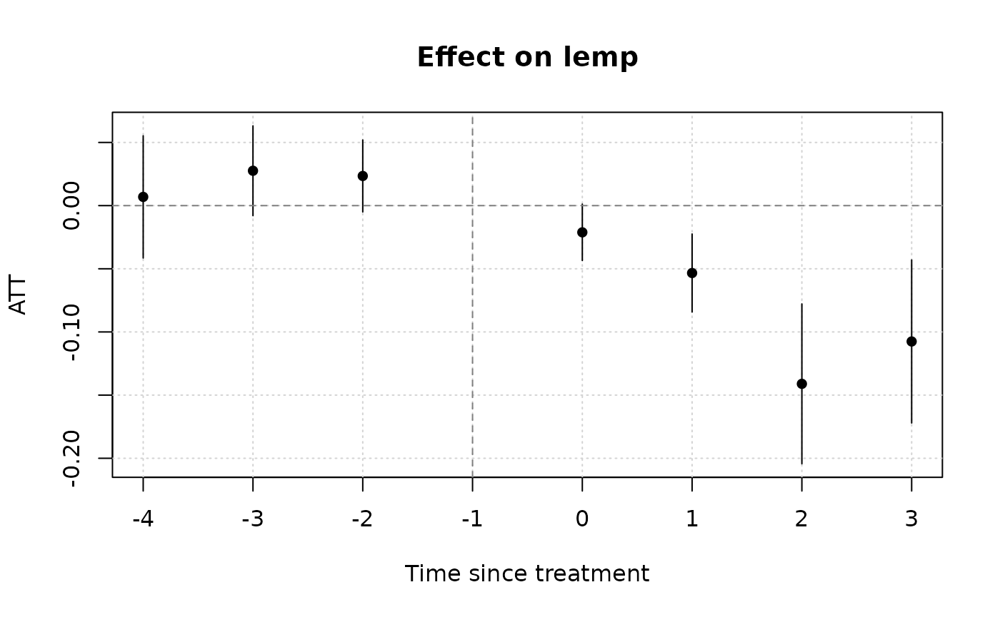
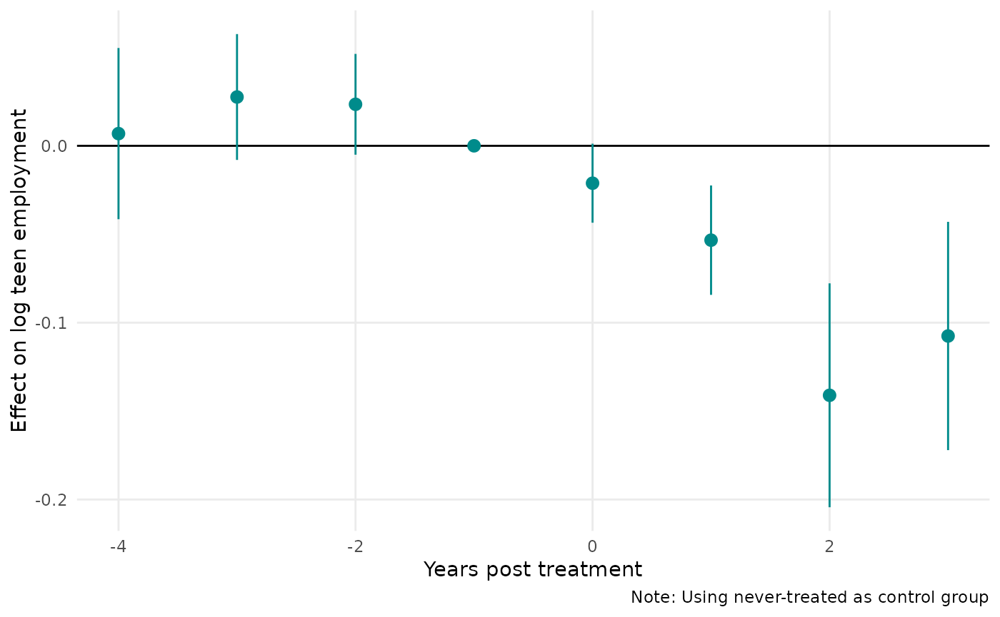

Background
A canonical research design for social scientists is the so-called “differences-in-differences” (DiD) design.1 In the classic 2x2 DiD case (two units, two periods), a simple interaction effect between two dummy variables suffices to recover the treatment effect. In base R this might look something like:
lm(y ~ Dtreated_unit * Dpost_treatment, data = somedata)In practice, rather than specify the interaction directly,
researchers often use an equivalent formulation known as two-way
fixed effects (TWFE). The core idea of TWFE is that we can subsume
our dummy variables above (Dtreated_unit and
Dpost_treatment) by adding unit and time fixed effects to
the regression. A single treatment dummy can then be used to capture the
effect of treatment directly. This shortcut is especially nice for more
complicated panel data settings with multiple units and multiple times
periods. A TWFE in base R might look as follows:
This type of regression is easy to run and intuitive, and for a long time everyone was happy. But it was too good to last. A cottage industry of smart research now demonstrates that things aren’t quite so simple. Among other things, the core TWFE result is very likely to be biased if the rollout of treatment was staggered over time (a common occurrence).
Fortunately, just as econometricians were taking away one of our favourite tools, they were kind enough to replace it with some new ones. Among these, the proposed approach by Wooldridge (2021, 2022) is noteworthy. His idea might be paraphrased as stating that the problem with TWFE is not that we were doing it in the first place. Rather, it’s that we weren’t doing it enough. Instead of only including a single treatment × time interaction, Wooldridge recommends that we saturate our model with all possible interactions between treatment and time variables, including treatment cohorts, as well as other covariates. He goes on to show that this approach actually draws an equivalence between different types of estimators (pooled OLS, twoway Mundlak regression, etc.) So it’s not entirely clear what to call it. But Wooldridge refers to the general idea as as extended TWFE—or, ETWFE—which I rather like and is where this package takes its name.
The Wooldridge ETWFE solution is intuitive and elegant. But it is also rather tedious and error prone to code up manually. The etwfe package aims to simplify the process by providing convenience functions that do the work for you.
Dataset
To demonstrate the core functionality of etwfe,
we’ll use the mpdta
dataset on US teen employment from the did package
(which you’ll need to install separately).
# install.packages("did")
data("mpdta", package = "did")
head(mpdta)
#> year countyreal lpop lemp first.treat treat
#> 866 2003 8001 5.896761 8.461469 2007 1
#> 841 2004 8001 5.896761 8.336870 2007 1
#> 842 2005 8001 5.896761 8.340217 2007 1
#> 819 2006 8001 5.896761 8.378161 2007 1
#> 827 2007 8001 5.896761 8.487352 2007 1
#> 937 2003 8019 2.232377 4.997212 2007 1In the examples that follow, our goal is to estimate the effect of
treatment (treat) on log employment (lemp).
Notice that the panel ID is at the county level
(countyreal), but treatment was staggered across cohorts
(first.treat) so that a group of counties were treated at
the same time. In addition to these staggered treatment effects, we also
observe log population (lpop) as a potential,
time-invariant control.2
Basic usage
Let’s load etwfe and work through its basic functionality.
etwfe
Given the package name, it won’t surprise you to know that the key
estimating function is etwfe(). Here’s how it would look
for our example dataset.
library(etwfe)
mod =
etwfe(
fml = lemp ~ lpop, # outcome ~ (time-invariant) controls
tvar = year, # time variable
gvar = first.treat, # group variable
data = mpdta, # dataset
vcov = ~countyreal # vcov adjustment (here: clustered)
)There are a few things to say about our etwfe() argument
choices and other function options, but we’ll leave those details aside
until a bit later. Right now, just know that all of the above arguments
are required except vcov (though I generally recommend it
too, since we probably want to cluster our standard errors at the
individual unit level).
Let’s take a look at our model object.
mod
#> OLS estimation, Dep. Var.: lemp
#> Observations: 2,500
#> Fixed-effects: first.treat: 4, year: 5
#> Varying slopes: lpop (first.treat: 4), lpop (year: 5)
#> Standard-errors: Clustered (countyreal)
#> Estimate Std. Error t value
#> .Dtreat:first.treat::2004:year::2004 -0.021248 0.021728 -0.977890
#> .Dtreat:first.treat::2004:year::2005 -0.081850 0.027375 -2.989963
#> .Dtreat:first.treat::2004:year::2006 -0.137870 0.030795 -4.477097
#> .Dtreat:first.treat::2004:year::2007 -0.109539 0.032322 -3.389024
#> .Dtreat:first.treat::2006:year::2006 0.002537 0.018883 0.134344
#> .Dtreat:first.treat::2006:year::2007 -0.045093 0.021987 -2.050907
#> .Dtreat:first.treat::2007:year::2007 -0.045955 0.017975 -2.556568
#> .Dtreat:first.treat::2004:year::2004:lpop_dm 0.004628 0.017584 0.263184
#> .Dtreat:first.treat::2004:year::2005:lpop_dm 0.025113 0.017904 1.402661
#> .Dtreat:first.treat::2004:year::2006:lpop_dm 0.050735 0.021070 2.407884
#> .Dtreat:first.treat::2004:year::2007:lpop_dm 0.011250 0.026617 0.422648
#> .Dtreat:first.treat::2006:year::2006:lpop_dm 0.038935 0.016472 2.363731
#> .Dtreat:first.treat::2006:year::2007:lpop_dm 0.038060 0.022477 1.693276
#> .Dtreat:first.treat::2007:year::2007:lpop_dm -0.019835 0.016198 -1.224528
#> Pr(>|t|)
#> .Dtreat:first.treat::2004:year::2004 3.2860e-01
#> .Dtreat:first.treat::2004:year::2005 2.9279e-03 **
#> .Dtreat:first.treat::2004:year::2006 9.3851e-06 ***
#> .Dtreat:first.treat::2004:year::2007 7.5694e-04 ***
#> .Dtreat:first.treat::2006:year::2006 8.9318e-01
#> .Dtreat:first.treat::2006:year::2007 4.0798e-02 *
#> .Dtreat:first.treat::2007:year::2007 1.0866e-02 *
#> .Dtreat:first.treat::2004:year::2004:lpop_dm 7.9252e-01
#> .Dtreat:first.treat::2004:year::2005:lpop_dm 1.6134e-01
#> .Dtreat:first.treat::2004:year::2006:lpop_dm 1.6407e-02 *
#> .Dtreat:first.treat::2004:year::2007:lpop_dm 6.7273e-01
#> .Dtreat:first.treat::2006:year::2006:lpop_dm 1.8474e-02 *
#> .Dtreat:first.treat::2006:year::2007:lpop_dm 9.1027e-02 .
#> .Dtreat:first.treat::2007:year::2007:lpop_dm 2.2133e-01
#> ... 10 variables were removed because of collinearity (.Dtreat:first.treat::2006:year::2004, .Dtreat:first.treat::2006:year::2005 and 8 others [full set in $collin.var])
#> ---
#> Signif. codes: 0 '***' 0.001 '**' 0.01 '*' 0.05 '.' 0.1 ' ' 1
#> RMSE: 0.537131 Adj. R2: 0.87167
#> Within R2: 8.449e-4What etwfe() has done underneath the hood is construct a
treatment dummy variable .Dtreat and saturated it together
with the other variables of interest as a set of multiway interaction
terms.3
You may have noticed that our etwfe() call returns a
standard fixest
object, since this is what it uses to perform the underlying estimation.
All of the associated methods and functions from the
fixest package are thus compatible with our model
object. For example, we could plot the raw regression coefficients with
fixest::coefplot(), or print them to a nice regression
table with fixest::etable(). However, the raw coefficients
from an etwfe() estimation are not particularly meaningful
in of themselves; recall that these are complex multiway interaction
terms that are probably hard to to interpret on their own. This insight
leads us to our next key function…
emfx
If the raw etwfe coefficients aren’t particularly useful
by themselves, what can we do with them instead? Well, we probably want
to aggregate them along some dimension of interest (e.g., by groups or
time, or as an event study). A natural way to perform these aggregations
is by recovering the appropriate marginal effects. The
etwfe package provides another convenience function for
doing so: emfx(), which is a thin(ish) wrapper around
marginaleffects::marginaleffects().
For example, we can recover the average treatment effect as follows.
emfx(mod)
#> Warning in emfx(mod): An "xvar" attribute was not found as part of the supplied
#> model object. (Did your original `etwfe()` call include a valid `xvar = ...`
#> argument?)Average margins are reported instead.
#>
#> Term Contrast Estimate Std. Error z Pr(>|z|) 2.5 %
#> .Dtreat mean(TRUE) - mean(FALSE) -0.05063 0.0125 -4.05 5.1167e-05 -0.07513
#> 97.5 % .Dtreat
#> -0.02613 TRUE
#>
#> Prediction type: response
#> Columns: type, term, contrast, estimate, std.error, statistic, p.value, conf.low, conf.high, .Dtreat, predicted, predicted_hi, predicted_loOr, we can recover the dynamic treatment effects a la an
event study by invoking the type argument. This time I’ll
save the resulting object since I plan to reuse it in a moment.
mod_es = emfx(mod, type = "event")
#> Warning in emfx(mod, type = "event"): An "xvar" attribute was not found as part
#> of the supplied model object. (Did your original `etwfe()` call include a valid
#> `xvar = ...` argument?)Average margins are reported instead.
mod_es
#>
#> Term Contrast Estimate Std. Error z Pr(>|z|)
#> .Dtreat mean(TRUE) - mean(FALSE) -0.03321 0.01337 -2.484 0.01297951
#> .Dtreat mean(TRUE) - mean(FALSE) -0.05735 0.01715 -3.343 0.00082830
#> .Dtreat mean(TRUE) - mean(FALSE) -0.13787 0.03079 -4.477 7.5665e-06
#> .Dtreat mean(TRUE) - mean(FALSE) -0.10954 0.03232 -3.389 0.00070142
#> 2.5 % 97.5 % event
#> -0.05941 -0.00701 0
#> -0.09097 -0.02373 1
#> -0.19823 -0.07751 2
#> -0.17289 -0.04619 3
#>
#> Prediction type: response
#> Columns: type, term, contrast, estimate, std.error, statistic, p.value, conf.low, conf.high, event, predicted, predicted_hi, predicted_loOther types of aggregations include "calendar" (i.e.,
treatment effect by period) and "group" (i.e., treatment
effect by cohort).
Presentation
Since emfx produces a standard
marginaleffects object, we can pass it on to other
supported methods and packages. For example, we can pass it on to modelsummary
to get a nice regression table of the event study coefficients. Note the
use of the shape and coef_rename arguments
below; these are optional but help to make the output look a bit
nicer.
library(modelsummary)
# Quick renaming function to replace ".Dtreat" with something more meaningful
rename_fn = function(old_names) {
new_names = gsub(".Dtreat", "Years post treatment =", old_names)
setNames(new_names, old_names)
}
modelsummary(
mod_es,
shape = term:event:statistic ~ model,
coef_rename = rename_fn,
gof_omit = "Adj|Within|IC|RMSE",
title = "Event study",
notes = "Std. errors are clustered at the county level"
)| (1) | |
|---|---|
| Years post treatment = 0 | −0.033 |
| (0.013) | |
| Years post treatment = 1 | −0.057 |
| (0.017) | |
| Years post treatment = 2 | −0.138 |
| (0.031) | |
| Years post treatment = 3 | −0.110 |
| (0.032) | |
| Num.Obs. | 2500 |
| R2 | 0.873 |
| FE..first.treat | X |
| FE..year | X |
| Std. errors are clustered at the county level |
For visualization, you can pass it on to your preferred plotting method. For example:
library(ggplot2)
theme_set(
theme_minimal() + theme(panel.grid.minor = element_blank())
)
ggplot(mod_es, aes(x = event, y = estimate, ymin = conf.low, ymax = conf.high)) +
geom_hline(yintercept = 0) +
geom_pointrange(col = "darkcyan") +
labs(x = "Years post treatment", y = "Effect on log employment")
Note that emfx only reports post-treatment effects. All
pre-treatment effects are swept out of the estimation because of the way
that ETWFE is set up. In fact, all pre-treatment effects are
mechanistically set to zero. This means that ETWFE cannot be used for
interrogating pre-treatment fit (say, a visual inspection for parallel
pre-trends). Still, you can get these zero pre-treatment effects by
changing the post_only argument. I emphasize that doing so
is strictly performative—again, pre-treatment effects are zero by
estimation design—but it might make your event study plot more
aesthetically pleasing.
# Use post_only = FALSE to get the "zero" pre-treatment effects
mod_es2 = emfx(mod, type = "event", post_only = FALSE)
#> Warning in emfx(mod, type = "event", post_only = FALSE): An "xvar" attribute
#> was not found as part of the supplied model object. (Did your original
#> `etwfe()` call include a valid `xvar = ...` argument?)Average margins are
#> reported instead.
ggplot(mod_es2, aes(x = event, y = estimate, ymin = conf.low, ymax = conf.high)) +
geom_hline(yintercept = 0) +
geom_vline(xintercept = -1, lty = 2) +
geom_pointrange(col = "darkcyan") +
labs(
x = "Years post treatment", y = "Effect on log employment",
caption = "Note: Zero pre-treatment effects for illustrative purposes only."
)
Other families
A key feature of the ETWFE approach—one that sets it apart from other
advanced DiD implementations and extensions—is that it supports
nonlinear model (distribution / link) families. Users need simply invoke
the family argument. Here’s a brief example, where we
recast our earlier event-study as a Poisson regression.
mpdta$emp = exp(mpdta$lemp)
etwfe(
emp ~ lpop, tvar = year, gvar = first.treat, data = mpdta, vcov = ~countyreal,
family = "poisson"
) |>
emfx("event")
#>
#> Term Contrast Estimate Std. Error z Pr(>|z|)
#> .Dtreat mean(TRUE) - mean(FALSE) -25.350 15.90 -1.59409 0.11091631
#> .Dtreat mean(TRUE) - mean(FALSE) 1.092 41.84 0.02609 0.97918362
#> .Dtreat mean(TRUE) - mean(FALSE) -75.125 22.30 -3.36942 0.00075327
#> .Dtreat mean(TRUE) - mean(FALSE) -101.824 28.10 -3.62309 0.00029111
#> 2.5 % 97.5 % event
#> -56.52 5.818 0
#> -80.92 83.100 1
#> -118.82 -31.425 2
#> -156.91 -46.741 3
#>
#> Prediction type: response
#> Columns: type, term, contrast, estimate, std.error, statistic, p.value, conf.low, conf.high, event, predicted, predicted_hi, predicted_loUnder the hood
Now that you’ve seen etwfe in action, let’s circle back to what the package is doing under the hood. This section isn’t necessary for you to use any of the functions; feel free to skip it. But a review of the internal details should help you to optimize for different scenarios and also give you an understanding of etwfe’s default choices.
Manual implementation
As I keep reiterating, the Wooldridge ETWFE approach basically involves saturating the regression with interaction effects. You can easily grab the formula of an estimated model to see for yourself.
mod$fml_all
#> $linear
#> lemp ~ .Dtreat:i(first.treat, i.year, ref = 0, ref2 = 2003)/lpop_dm
#> <environment: 0x5592564c3290>
#>
#> $fixef
#> ~first.treat + first.treat[[lpop]] + year + year[[lpop]]At this point, however, you may notice a few things. The first is
that our formula references several variables that aren’t in the
original dataset. An obvious one is the .Dtreat treatment
dummy. A more subtle one is lpop_dm, which is the
demeaned (i.e., group-centered) version of our
lpop control variable. All (time-invariant) control
variables have to be demeaned before they are interacted in the ETWFE
setting. Here’s how you could have constructed the dataset ahead of time
and estimated the ETWFE regression manually:
# First construct the dataset
mpdta2 = mpdta |>
transform(
.Dtreat = year >= first.treat & first.treat != 0,
lpop_dm = ave(lpop, first.treat, year, FUN = \(x) x - mean(x, na.rm = TRUE))
)
# Then estimate the manual version of etwfe
mod2 = fixest::feols(
lemp ~ .Dtreat:i(first.treat, i.year, ref = 0, ref2 = 2003) / lpop_dm |
first.treat[lpop] + year[lpop],
data = mpdta2,
vcov = ~countyreal
)We can confirm that the manual approach yields the same output as our
original etwfe regression. I’ll use modelsummary to do that
here, since I’ve already loaded it above.4.
modelsummary(
list("etwfe" = mod, "manual" = mod2),
gof_map = NA # drop all goodness-of-fit info for brevity
)| etwfe | manual | |
|---|---|---|
| .Dtreat × first.treat = 2004 × year = 2004 | −0.021 | −0.021 |
| (0.022) | (0.022) | |
| .Dtreat × first.treat = 2004 × year = 2005 | −0.082 | −0.082 |
| (0.027) | (0.027) | |
| .Dtreat × first.treat = 2004 × year = 2006 | −0.138 | −0.138 |
| (0.031) | (0.031) | |
| .Dtreat × first.treat = 2004 × year = 2007 | −0.110 | −0.110 |
| (0.032) | (0.032) | |
| .Dtreat × first.treat = 2006 × year = 2006 | 0.003 | 0.003 |
| (0.019) | (0.019) | |
| .Dtreat × first.treat = 2006 × year = 2007 | −0.045 | −0.045 |
| (0.022) | (0.022) | |
| .Dtreat × first.treat = 2007 × year = 2007 | −0.046 | −0.046 |
| (0.018) | (0.018) | |
| .Dtreat × first.treat = 2004 × year = 2004 × lpop_dm | 0.005 | 0.005 |
| (0.018) | (0.018) | |
| .Dtreat × first.treat = 2004 × year = 2005 × lpop_dm | 0.025 | 0.025 |
| (0.018) | (0.018) | |
| .Dtreat × first.treat = 2004 × year = 2006 × lpop_dm | 0.051 | 0.051 |
| (0.021) | (0.021) | |
| .Dtreat × first.treat = 2004 × year = 2007 × lpop_dm | 0.011 | 0.011 |
| (0.027) | (0.027) | |
| .Dtreat × first.treat = 2006 × year = 2006 × lpop_dm | 0.039 | 0.039 |
| (0.016) | (0.016) | |
| .Dtreat × first.treat = 2006 × year = 2007 × lpop_dm | 0.038 | 0.038 |
| (0.022) | (0.022) | |
| .Dtreat × first.treat = 2007 × year = 2007 × lpop_dm | −0.020 | −0.020 |
| (0.016) | (0.016) |
Regarding fixed effects
Let’s switch gears and talk about fixed effects quickly. If you are a
regular fixest user, you may have noticed that we’ve
been invoking its varying
slopes syntax in the fixed effect slot (i.e.,
first.treat[lpop] and year[lpop]). The reason
for this is part practical, part philosophical. From a practical
perspective, factor_var[numeric_var] is equivalent to base
R’s factor_var/numeric_var “nesting” syntax but is much
faster for high-dimensional factors.5 From a philosophical perspective,
etwfe tries to limit the amount of extraneous
information that it reports to users. Most of the interaction effects in
the ETWFE framework are just acting as controls. By relegating them to
the fixed effects slot, we can avoid polluting the user’s console with a
host of extra coefficients. Nonetheless, we can control this behaviour
with the fe (“fixed effects”) argument. Consider the
following options and their manual equivalents.
# fe = "feo" (fixed effects only)
mod_feo = etwfe(
lemp ~ lpop, tvar = year, gvar = first.treat, data = mpdta, vcov = ~countyreal,
fe = "feo"
)
# ... which is equivalent to the manual regression
mod_feo2 = fixest::feols(
lemp ~ .Dtreat:i(first.treat, i.year, ref = 0, ref2 = 2003) / lpop_dm +
lpop + i(first.treat, lpop, ref = 0) + i(year, lpop, ref = 2003) |
first.treat + year,
data = mpdta2, vcov = ~countyreal
)
# fe = "none"
mod_none = etwfe(
lemp ~ lpop, tvar = year, gvar = first.treat, data = mpdta, vcov = ~countyreal,
fe = "none"
)
# ... which is equivalent to the manual regression
mod_none2 = fixest::feols(
lemp ~ .Dtreat:i(first.treat, i.year, ref = 0, ref2 = 2003) / lpop_dm +
lpop + i(first.treat, lpop, ref = 0) + i(year, lpop, ref = 2003) +
i(first.treat, ref = 0) + i(year, ref = 2003),
data = mpdta2, vcov = ~countyreal
)I’ll leave it up to you to pass any of these models to
emfx to confirm that they give correct aggregated treatment
effects. But we can quickly demonstrate in a regression table that they
all return the same raw coefficients.
mods = list(
"etwfe" = mod,
"manual" = mod2,
"etwfe (feo)" = mod_feo,
"manual (feo)" = mod_feo2,
"etwfe (none)" = mod_none,
"manual (none)" = mod_none2
)
modelsummary(mods, gof_map = NA)| etwfe | manual | etwfe (feo) | manual (feo) | etwfe (none) | manual (none) | |
|---|---|---|---|---|---|---|
| .Dtreat × first.treat = 2004 × year = 2004 | −0.021 | −0.021 | −0.021 | −0.021 | −0.021 | −0.021 |
| (0.022) | (0.022) | (0.022) | (0.022) | (0.022) | (0.022) | |
| .Dtreat × first.treat = 2004 × year = 2005 | −0.082 | −0.082 | −0.082 | −0.082 | −0.082 | −0.082 |
| (0.027) | (0.027) | (0.027) | (0.027) | (0.027) | (0.027) | |
| .Dtreat × first.treat = 2004 × year = 2006 | −0.138 | −0.138 | −0.138 | −0.138 | −0.138 | −0.138 |
| (0.031) | (0.031) | (0.031) | (0.031) | (0.031) | (0.031) | |
| .Dtreat × first.treat = 2004 × year = 2007 | −0.110 | −0.110 | −0.110 | −0.110 | −0.110 | −0.110 |
| (0.032) | (0.032) | (0.032) | (0.032) | (0.032) | (0.032) | |
| .Dtreat × first.treat = 2006 × year = 2006 | 0.003 | 0.003 | 0.003 | 0.003 | 0.003 | 0.003 |
| (0.019) | (0.019) | (0.019) | (0.019) | (0.019) | (0.019) | |
| .Dtreat × first.treat = 2006 × year = 2007 | −0.045 | −0.045 | −0.045 | −0.045 | −0.045 | −0.045 |
| (0.022) | (0.022) | (0.022) | (0.022) | (0.022) | (0.022) | |
| .Dtreat × first.treat = 2007 × year = 2007 | −0.046 | −0.046 | −0.046 | −0.046 | −0.046 | −0.046 |
| (0.018) | (0.018) | (0.018) | (0.018) | (0.018) | (0.018) | |
| .Dtreat × first.treat = 2004 × year = 2004 × lpop_dm | 0.005 | 0.005 | 0.005 | 0.005 | 0.005 | 0.005 |
| (0.018) | (0.018) | (0.018) | (0.018) | (0.018) | (0.018) | |
| .Dtreat × first.treat = 2004 × year = 2005 × lpop_dm | 0.025 | 0.025 | 0.025 | 0.025 | 0.025 | 0.025 |
| (0.018) | (0.018) | (0.018) | (0.018) | (0.018) | (0.018) | |
| .Dtreat × first.treat = 2004 × year = 2006 × lpop_dm | 0.051 | 0.051 | 0.051 | 0.051 | 0.051 | 0.051 |
| (0.021) | (0.021) | (0.021) | (0.021) | (0.021) | (0.021) | |
| .Dtreat × first.treat = 2004 × year = 2007 × lpop_dm | 0.011 | 0.011 | 0.011 | 0.011 | 0.011 | 0.011 |
| (0.027) | (0.027) | (0.027) | (0.027) | (0.027) | (0.027) | |
| .Dtreat × first.treat = 2006 × year = 2006 × lpop_dm | 0.039 | 0.039 | 0.039 | 0.039 | 0.039 | 0.039 |
| (0.016) | (0.016) | (0.016) | (0.016) | (0.016) | (0.016) | |
| .Dtreat × first.treat = 2006 × year = 2007 × lpop_dm | 0.038 | 0.038 | 0.038 | 0.038 | 0.038 | 0.038 |
| (0.022) | (0.022) | (0.022) | (0.022) | (0.022) | (0.022) | |
| .Dtreat × first.treat = 2007 × year = 2007 × lpop_dm | −0.020 | −0.020 | −0.020 | −0.020 | −0.020 | −0.020 |
| (0.016) | (0.016) | (0.016) | (0.016) | (0.016) | (0.016) | |
| lpop | 1.065 | 1.065 | 1.065 | 1.065 | ||
| (0.022) | (0.022) | (0.022) | (0.022) | |||
| first.treat = 2004 × lpop | 0.051 | 0.051 | 0.051 | 0.051 | ||
| (0.038) | (0.038) | (0.038) | (0.038) | |||
| first.treat = 2006 × lpop | −0.041 | −0.041 | −0.041 | −0.041 | ||
| (0.047) | (0.047) | (0.047) | (0.047) | |||
| first.treat = 2007 × lpop | 0.056 | 0.056 | 0.056 | 0.056 | ||
| (0.039) | (0.039) | (0.039) | (0.039) | |||
| year = 2004 × lpop | 0.011 | 0.011 | 0.011 | 0.011 | ||
| (0.008) | (0.008) | (0.008) | (0.008) | |||
| year = 2005 × lpop | 0.021 | 0.021 | 0.021 | 0.021 | ||
| (0.008) | (0.008) | (0.008) | (0.008) | |||
| year = 2006 × lpop | 0.011 | 0.011 | 0.011 | 0.011 | ||
| (0.011) | (0.011) | (0.011) | (0.011) | |||
| year = 2007 × lpop | 0.021 | 0.021 | 0.021 | 0.021 | ||
| (0.012) | (0.012) | (0.012) | (0.012) | |||
| (Intercept) | 2.260 | 2.260 | ||||
| (0.088) | (0.088) | |||||
| first.treat = 2004 | 0.038 | 0.038 | ||||
| (0.154) | (0.154) | |||||
| first.treat = 2006 | 0.461 | 0.461 | ||||
| (0.213) | (0.213) | |||||
| first.treat = 2007 | −0.286 | −0.286 | ||||
| (0.167) | (0.167) | |||||
| year = 2004 | −0.090 | −0.090 | ||||
| (0.031) | (0.031) | |||||
| year = 2005 | −0.110 | −0.110 | ||||
| (0.033) | (0.033) | |||||
| year = 2006 | −0.052 | −0.052 | ||||
| (0.040) | (0.040) | |||||
| year = 2007 | −0.057 | −0.057 | ||||
| (0.045) | (0.045) |
A final point to note about fixed effects is that
etwfe defaults to using group-level (i.e.,
cohort-level) fixed effects like first.treat, rather than
unit-level fixed effects like countyreal. This design
decision reflects a neat ancillary result in Wooldridge (2021), which
proves the equivalence between the two types of fixed effects for linear
cases. Group-level effects have the virtue of being faster to estimate,
since there are fewer factor levels. Moreover, they are
required for nonlinear model families like Poisson per the
underlying ETWFE theory. Still, you can specify unit-level fixed effects
for the linear case through the ivar argument. Again, we
can easily confirm that this yields the same estimated treatment effects
as the group-level default (although the standard errors will be
slightly different).
mod_es_i = etwfe(
lemp ~ lpop, tvar = year, gvar = first.treat, data = mpdta,
ivar = countyreal # NEW: Use unit-level (county) FEs
) |>
emfx("event")
#> Warning in emfx(etwfe(lemp ~ lpop, tvar = year, gvar = first.treat, data =
#> mpdta, : An "xvar" attribute was not found as part of the supplied model
#> object. (Did your original `etwfe()` call include a valid `xvar = ...`
#> argument?)Average margins are reported instead.
modelsummary(
list("Group-level FEs (default)" = mod_es, "Unit-level FEs" = mod_es_i),
shape = term:event:statistic ~ model,
coef_rename = rename_fn,
gof_omit = "Adj|Within|IC|RMSE"
)| Group-level FEs (default) | Unit-level FEs | |
|---|---|---|
| Years post treatment = 0 | −0.033 | −0.033 |
| (0.013) | (0.015) | |
| Years post treatment = 1 | −0.057 | −0.057 |
| (0.017) | (0.019) | |
| Years post treatment = 2 | −0.138 | −0.138 |
| (0.031) | (0.034) | |
| Years post treatment = 3 | −0.110 | −0.110 |
| (0.032) | (0.036) | |
| Num.Obs. | 2500 | 2500 |
| R2 | 0.873 | 0.993 |
| FE..year | X | X |
| FE..first.treat | X | |
| FE..countyreal | X |